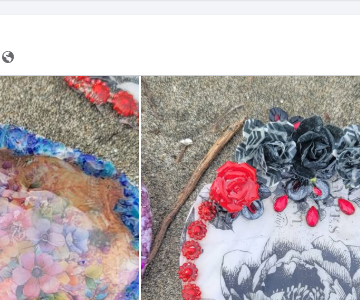
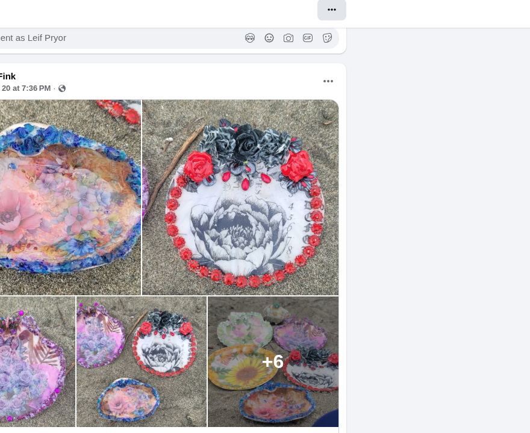
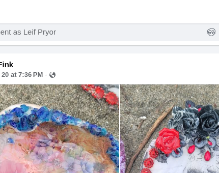
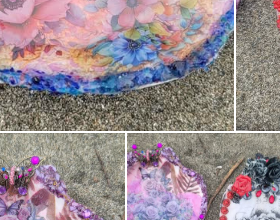
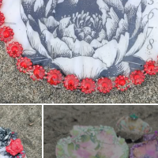
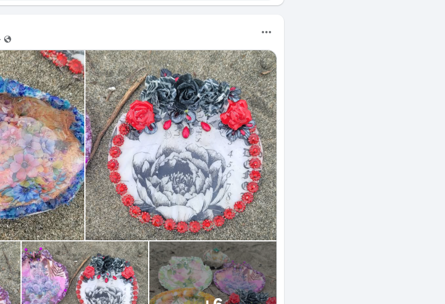

A year of tables
Month-by-month tide: winter storms, spring foam, August class, holiday gifts. She has more than one afternoon on that page.
Dana Fink paints the Pacific onto what the tide already finished.
Saturday 1–3 she teaches the craft because the work has to do more than look pretty: every piece and every seat in class is raising money for her husband’s cancer care. This is not a mood board. It is a tide table with a job.
See the shells Read the why





These frames are Dana’s own pieces from her public posts — shells and florals only. No family snapshots, no dogs. A year of tables exists on her page; this first hang is the August tide we could pull cleanly. More plates go up as she sends them.
Dana Fink makes under the name Beachgypsycreations. If you already know her from the ranch, you know the hands. The art is the same person: patient, coastal, unwilling to waste a pretty thing that could work.
In August she wrote the reason out loud. She is teaching a Saturday class from 1:00 to 3:00 because she is trying to make money to support her husband’s cancer treatment. That sentence is the whole brief.
The shop should feel like a night market that washed ashore: lantern gold on wet sand, tarot-adjacent without costume, gypsy in the old sense of a person who keeps moving and still sets a beautiful table. Cash App lives on her Facebook QR until we wire a cleaner till.
Find her as Dana Fink / Beachgypsycreations (the TarotShop page). Comment as yourself if you already do. This site is the public tide table so the work can travel farther than a feed.
She teaches the same pieces you see here. Seats support treatment costs. Message Dana on Facebook to hold a Saturday. When the domain is live, this block becomes the booking strip.
Month-by-month tide: winter storms, spring foam, August class, holiday gifts. She has more than one afternoon on that page.
Keep the TarotShop lineage as a quiet major-arcana caption on a few shells — never stock “gypsy lady” clipart.
A small mailer: one unfinished shell, two pigments, a card that says why the money moves.
A shelf at Back of Beyond if she wants it. Separate till. Same hands.